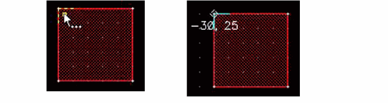
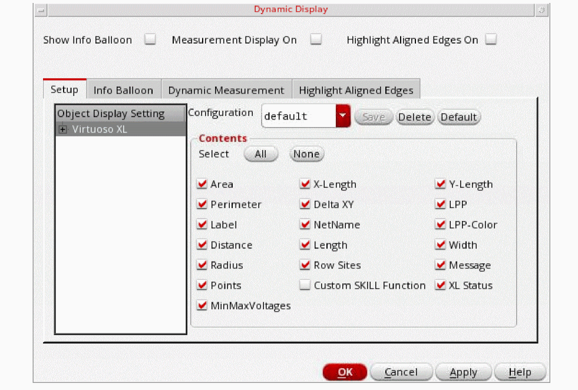

2
Viewing the Design
- Zooming In or Out
- Using the Magnifier
- Using Dynamic Zoom
- Panning to a Point
- Panning Across the Cellview
- Redrawing the Display
- Setting an Area Display
- Viewing Coordinates
- Viewing Angles
- Viewing Selected Object Information
- Saving or Restoring a View
- Displaying a Background Cellview
- Reading Status Information
- Creating a Reference Window
- Using the World View Window
- Setting Display Options
- Displaying Object Information
Zooming In or Out
Use the View – Zoom commands to control the magnification of the cellview.
- Zoom In: Magnifies the image in the cellview window by a factor of 2. You can also scroll up the mouse scroll wheel to zoom in.
- Zoom Out: Reduces the image in the cellview window by a factor of 2. You can also scroll down the mouse scroll wheel to zoom out.
- Zoom To Area: Prompts you to create a box and then magnifies the image defined by the box to fit in the cellview window.
- Zoom To Grid: Reduces the image to the smallest magnification at which the grid is visible.
- Zoom To Selected: Increases the image to the largest magnification at which the selected objects can be viewed in the cellview window.
- Zoom To Fit All: Redraws the window so that all objects in the cellview appear in the window. This saves time after you zoom or pan and want to see the entire cellview again.
- Zoom To Fit Edit: Places the cell you are editing in the center during edit-in-place. If you are not editing in place, Zoom To Fit Edit has the same result as Zoom To Fit All.
By using the mouse, you can create a box to zoom in on a specific area or zoom out to a specific size.
To zoom in by using the mouse:
To zoom out by using the mouse:
-
Press
Shift, click right, and drag the pointer to create a box into which you want the reduced image to fit.
Using the Magnifier
You can use the magnifier to magnify (zoom in) a specific part of the design display area instead of zooming in the entire design display area. You can perform the creating and editing operations in the magnified region.
-
Choose View – Magnifier or use the dot bindkey (
.) to toggle the magnifier on/off.
A square magnifier appears. It is anchored to the pointer position. You can customize the position of the magnifier with respect to the pointer by using the Magnifier Options Form (Options – Magnifier or use the bindkey'). -
Place the pointer over the area in the design that you want to magnify.
The magnifier appears as a square box over the design display area and shows a magnified view of the design under and around the pointer, as shown below.
- You can move the pointer around to magnify different regions of the design. The magnifier moves along with the pointer, based on the anchorage defined for the magnifier.
-
Press
.to switch off the magnifier.
You can use the following bindkeys while using the magnifier:
-
Press
#to fix the magnifier position at one place in the design display area. -
Press
Shift+Ctrl+ Up arrow key (or pressShift+Ctrland scroll the mouse scroll wheel up) to scale up the magnification by a factor of 1.25 in the magnifier. -
Press
Shift+Ctrl+ Down arrow key (or pressShift+Ctrland scroll the mouse scroll wheel down) to scale down the magnification by a factor of 0.80 in the magnifier.
For information about the SKILL APIs that can be used for design magnification at any time during a virtuoso session, see
Using Dynamic Zoom
You can use the dynamic zoom feature to automatically pan or zoom in the layout canvas based on the objects selected in the Navigator assistant. This lets you more locate objects in a busy design.
To enable the dynamic zoom feature, select the Dynamic Zoom option in the View menu.
This feature has three modes, Pan To Selected, Zoom To Selected, or Zoom To Fit. To set the mode:
-
Select Options - Display.
The Display Options form opens.
- In the Zoom/Pan Controls section, ensure that the Dynamic Zoom option is set to on.
- Choose the dynamic zoom Mode that you want to use, Pan to Selected, Zoom To Selected, or Zoom To Fit.
- Move the slider to specify the Zoom Scale (%).
- Click OK to apply the Zoom / Pan Controls updates.
Panning to a Point
To center the image in the cellview window around a point you enter, choose View – Pan [Tab] and click the point you want to center. The image moves so the point you chose is in the center of the window. Alternatively, you can specify the point around which you want to centre the image in the cellview window using the Enter Points form. For more information, see Enter Points Form.
Panning Across the Cellview
The arrow keys on the keypad let you pan across the cellview in any direction.

Redrawing the Display
After you have made many edits to a cellview, the design area can sometimes show portions of lines or objects that you have moved or deleted. Choose View – Redraw to refresh the cellview display.
Setting an Area Display
To set the display detail for an area,
- Choose View – Area Display – Set and set the From and To display levels for the area.
- Create a box in the cellview around the area in which you want to see the detail of lower levels of the design.
To remove one detail area at a time,
Viewing Coordinates
The Show Coordinates command displays the coordinates of the selected shape. To view the coordinates of a shape, select it fully or partially. You can select a shape either before (pre-selection mode) or after (post-selection mode) you run the Show Coordinates command. For more information about pre-selection and post-selection modes, see Pre-Selection and Post-Selection of Objects.
To view the coordinates of a shape:
- Choose View – Show Coordinates.
-
Select a rectangle as explained below:
-
Point at or select the complete shape: The coordinate information is displayed for the lower-left and top-right vertices of the rectangle, as shown in the figure below. Notice the diamond-shaped markers identifying the coordinate locations.
-
Point at or select a vertex: The coordinate information is displayed at the selected vertex of the rectangle, as shown in the figure below.
-
Point at or select an edge: The coordinate information is displayed at the two vertices of the selected edge of the rectangle, as shown in the figure below.

-
Point at or select the complete shape: The coordinate information is displayed for the lower-left and top-right vertices of the rectangle, as shown in the figure below. Notice the diamond-shaped markers identifying the coordinate locations.
To view the coordinates of all the vertices of a selected shape:
-
Select a shape, say a polygon.
The coordinate information is displayed for one of the vertices, as shown in the figure below.

-
Press
Spacebarto display the coordinates of the next vertex.
You can continue to press
Spacebarto view the coordinates of all the vertices in succession.
To view the coordinates of the vertices when multiple shapes are selected:
-
Select multiple shapes, say a rectangle, a path, and the edge of a polygon.
The coordinates are displayed for each shape in the selected set one by one, for example, for the selected edge of the polygon, as shown in the figure below.

-
Press
Spacebaragain to view the next set of coordinates—lower-left and upper-right vertices of the rectangle, as shown.
Continue to press
Spacebarto view the remaining sets of coordinates.


Spacebar. On the other hand, if you first select the required shapes and then run the Show Coordinates command, the command exits after cycling through all the coordinates once.The following table shows examples of coordinates displayed for various shapes:
|
|
|
||
 |
|
Circles and ellipses have two sets of coordinates, one for the bounding box and one for the center point.
Rectangles, paths, labels, and vias too have only one set of coordinates. Selecting a label, or via fully or partially displays the same set of coordinates, that of their respective origins. Selecting an instance displays the lower left and upper right coordinates of the bbox and after you press the spacebar the origin is displayed.
A donut has three sets of coordinates—one each for its two bounding boxes and one for the center point—as shown in the figures below.
You can control the font size and color of the coordinates displayed by using the Dynamic Measurement tab of the Dynamic Display Form.
Viewing Angles
The Show Angles command displays the angle enclosed at the intersection of two edges. The command displays both the interior and exterior angles. You can view the angles of a shape by selecting it fully or partially. The Show Angles command supports both pre-selection and post-selection modes.
To view the angle measurement between the edges of a shape:
- Choose View – Show Angles.
-
Select a shape, say a rectangle.
The interior and exterior angle measurements appear, as shown in the figure below. Notice that the angles are marked with arcs.
To view the angle measurements at all the vertices of a selected shape:
- Select a shape, say a polygon.
-
Press
Spacebarto view the angle at the next vertex.
Continue to pressSpacebarto view the angles at all the vertices of the polygon in succession.
To view the angle measurements at the vertices of multiple selected shapes:
-
Select multiple shapes, say a rectangle, a path, and the edge of a polygon.
The angle measurements are displayed at one of the vertices of the selected edge of the polygon, as shown in the figure below.
-
Continue to press
Spacebarto view the angle measurements for the remaining vertices, that is, all the vertices of the rectangle.
Because the Show Angles command does not support paths, angle measurements are not displayed for the path.
If you first run the Show Angles command and then select the required shapes, you can repeatedly cycle through the angles by pressingSpacebar. On the other hand, if you first select the required shapes and then run the Show Angles command, the command exits after cycling through all the angles once. -
Press
Escto finish the command.
Viewing Selected Object Information
To display information about a selected set of objects, choose View – Show Selected Set.
The Show Selected Set Form opens.
- The Total Shapes Selected section lists the selected objects, their layers, the number of points used to create them, and the coordinates of the bounding box that surrounds each object.
- The Total Instances Selected section lists all selected cell instances, including each instance name, placement orientation, and the coordinates of its origin.
- The Total Mosaics Selected show information about arrays of cell instances are selected.
- The Total Boundaries Selected section lists the selected boundaries, their types, the number of edges used to create them, the area, and the boundary names.
- The Total Blockages Selected section lists the selected blockages, their types, their layers, their owners, the number of points used to create them, and their areas.
- The Total Vias Selected section lists the selected vias, their types (standard or custom), their names, their nets, their directions, and in the case of custom vias their library, cell and view names.
Saving or Restoring a View
The layout editor keeps the last three images you viewed in memory. You can move forward and back through these previously zoomed or panned images when you need to.
To return to the previous image,
To go forward to the next image,
Saving a Zoom or Pan Image
The Save View Form saves the image shown in the window to a file that lasts for the current editing session.
Restoring a Zoom or Pan Image
After you have saved the image, you can later restore it with the Restore View command.
-
Choose View – Save/Restore – Restore View and click the name of the file you want to restore.
The image in the window is replaced by the image you saved.
Displaying a Background Cellview
The View – Background command allows you to display two superimposed cellviews in the same window. Any cellview from any library can be used as a background cellview, except the cellview you are currently editing. You can display layout, abstract, and schematic cellviews in the same window, or you can use a layout cellview as a template to guide your design.
You can open only one background cellview per displayed cellview. The background cellview is visible when you are editing in place. It is not visible when you are descending, but becomes visible when you return to the original hierarchical level.
All display options set in the Display Options window are obeyed by both the foreground cellview and the background cellview. The background cellview can be hierarchical.
The cellview you superimpose as a background cellview is purely graphical. It has no influence on any application commands or functions.
- You cannot edit, select, query, or move any objects contained in the background cellview.
- The background cellview has no effect on functions such as pointer gravity movement.
- The View - Fit command does not take into account the background cellview.
The background cellview retains all the settings of the Palette Assistant (visibility, layer packet information, etc.) that is attached to the technology file of the background cellview. For example, if the background cellview contains objects on metal2, the objects on metal2 will not display if the visibility of metal2 is turned off in the Palette assistants of the background cellview. If the background cellview has a different technology file from your foreground cellview, the displayed Palette assistants will not control any of the display characteristics of the background cellview.
If the background cellview is edited in another window, you will need to redraw to see the changes made to the background cellview in the foreground cellview.
To display a background cellview,
-
From an open cellview window choose View – Background.
The Background Cellview Form appears. -
Specify the library, cell, and view name of the cell you want to use as the background cellview.
Your current edited cellview cannot be used as a background in your open window. - Specify the X and Y coordinates where you want the cellview to be placed in the window.
- Select the rotational angle you want to apply to the background cellview.
- Specify whether or not you want the background cellview to be displayed or displayed with a reduced luminosity.
-
Click OK.
The background cellview appears behind your opened cellview.
Reading Status Information
The Status Banner at the bottom and the Status Toolbar at the top of the design window provide dynamic information such as pointer movement, object coordinates, and the command currently active.
Status Banner
The Status Banner displays by default in a design window. You can select the information you want to view in the Status Banner and change the order in which the items appear by using the bannerFields environment variable.
Status Toolbar
You can enable or disable the Status Toolbar. View the Status Toolbar using one of these methods:
- Select Window – Toolbars – Status Toolbar.
- Right-click anywhere in the main toolbar area and select Status Toolbar.
The status toolbar displays information related to the objects selected on the canvas.
The first section of the status toolbar displays the following information:
-
Selection mode (full select (
F), full select with spine (FS), partial select (P), or partial select with spine (PS)) and the number of figures selected. For example, (F)Select:2 signifies two figures are selected in the full selection mode. - The number of nets selected (Sel(N):n)
- The number of instances selected (Sel(I):n)
- The number of objects selected (Sel(O):n)
The second section of the status toolbar displays the editable toolbar. When you start a command and press the Tab key, the X and Y fields are highlighted and the dX and dY fields are set to 0, as shown below:
You can use the environment variable to setDxDyToZero to set the dX and dY fields to 0 on the status toolbar.
You can edit the X and Y fields. When you press Enter, the X and Y coordinates are used by the currently active command.
Enter, the pointer pans to the coordinates specified in the X and Y fields.
The dX and dY fields get highlighted if you press the Tab key again. Similar to the X and Y fields, you can edit the dX and dY fields. When you press Enter, the dX and dY coordinates are used by the currently active command.
You can control the width of the X, Y, dX, and dY fields on the status toolbar by using the environment variable, statusBarXYdXdYLength.
The X and Y fields are coupled. If you set one, the other is automatically set. The same is true for dX and dY fields.
The Dist field displays the distance the pointer has moved and the Cmd field displays the currently active command.
For Move, Copy, and Stretch commands, when you do not specify the values in the X and Y fields and press Enter:
- If the selection set has a single object with origin, the origin will be considered as the reference point.
- If the selection set has a single object without origin, the lower left of the objects bounding box will considered as the reference point.
- If the selection set has multiple objects, the lower left of the selection sets bounding box will considered as the reference point.
Using the Window – Workspaces – Save As command, you can save a configuration to display the Status Toolbar every time the cellview window is opened.
Customizing Status Toolbar Information
You can customize the information that is displayed on the status toolbar using the environment variable, statusToolbarFields. You can display fields, such as, cellsize, number of selected objects, environment variable values, shell environment variable values, and window variable values.
The following table lists the information that can be displayed on the status toolbar and an example of the syntax to be used for the environment variable, statusToolbarFields.
| Display Information | Syntax |
|---|---|
|
|
|
|
|
|
You can also customize the display format of the information displayed on the status toolbar. You can specify information in bold font and change the color of some information on the toolbar. You can also use an expression format that allows conditional formatting based on values. For example, the information can be displayed in bold font if a command is active or if the number of selections is more than zero, you can customize the status toolbar to display this information in red and bold font.
Creating a Reference Window
You can display a small copy of the whole cellview. This is often called a reference window because you use it to see your whole layout while you edit a zoomed-in portion.
-
Choose Window – Copy Window.
A reference window appears, displaying the same cellview. - To shrink the new window, click a corner of the new window and drag it towards the opposite corner.
-
In the new window, choose View – Fit All [
f].
Using a Reference Window to Zoom or Pan
When you have two windows displaying the same cellview, you can start a Zoom or Pan command in your original window and then enter the points to zoom or pan in the reference window. This way, you can pinpoint the area you want to display using the reference window.
To zoom in a reference window,
- With the pointer in the original window, choose Zoom – In.
- Move the pointer into the reference window.
-
Click to create the zoom box in the reference window.
The original window zooms in to the area you designated in the reference window, but the reference window remains unchanged.
Using a Reference Window to Create or Edit Objects
When you have two windows displaying the same cellview, you can start an editing command in one and finish it in the other window. For example,
- In the original window, choose Create – Path.
- Click to begin creating the path.
- Move the pointer into the reference window, and double-click to finish the path.
Using the World View Window
The World View window shows the complete layout design, its relationship to the main window, and marks the part of the design that is currently displayed in the main graphics window with a view box.
To open the World View window, choose Window – Assistants – World View.
-
Zooming In or Out
The view box has a black bar on each side which is a handle used to zoom in or out. when you hold the left mouse button down on a handle of the view box and drag inward or outward, the view box increases or decreases in size and the cellview zooms in or out corresponding to the size of the view box. -
Moving the View Box
To move the view box to a specific area, click the desired area of the design in the World View window with the left mouse button. You can also click the view box and drag it to a new location.
If you use the middle mouse button to click the design in the World View window, a context-sensitive menu opens.

By using the context-sensitive menu, you can:
- Redraw the window
- Zoom In
- Zoom Out
- Fit the entire design into the World View window by choosing Fit All
- Select the percentage of the color luminosity of the view box by choosing Pattern.
Setting Display Options
The Display Controls lets you choose how objects are displayed.
Setting Up the Design Objects to Appear
To control which design objects or attributes appear,
-
Choose Options – Display.
The Display Options Form opens. - Click any of the display controls.
- Click Apply to see the result of your changes.
- When you are satisfied with the settings, click OK.
For a description of the options available in the form, see Display Options Form.
Displaying Instance or Master Cell Names
When you suppress cell instance detail (press Ctrl + F), one of the following is displayed for each instance:
- The master cell name
- The instance name (usually an incremented number)
- Both master and instance name
To choose what name you want displayed,
-
Choose Options – Display.
The Display Options Form opens. - Set Show Name Of to instance or master or both.
- Click OK.
Displaying Details or Outlines of Arrays
You can adjust the display details of cell arrays.
- Choose Options – Display.
- Set the Array Icons, Array Display, and Display Levels fields as desired.
- Click OK.
The following table lists the possible options and the results obtained.
The following figures show sample settings for the display of arrays.
Setting Display Levels
You can control whether details inside of cell instances placed in a cellview appear.
-
Choose Options – Display.
The Display Options Form opens. -
Set the display levels.
From shows the lowest level of hierarchy that appears. By default, the display begins at the current level, 0.
To shows the highest level of hierarchy that appears. Cell instances inside this cellview are level 1, instances inside level 1 are level 2, and so on. - Click OK.
To set the display level to 0, press Control-f in the design window. To set the display level to 32, press Shift-f in the design window.
Setting Up Grid Controls
By default, the cellview window shows a grid of dots. There are two different grids: the minor (small) grid and the major (large) grid.
- Minor grid points are white and appear at every micron.
- Major grid points are green by default and appear at every 5 microns.
-
Choose Options – Display.
The Display Options Form opens. - Set the grid controls to the settings you want.
- Click OK.
Setting Up Snap Grid
The grid defines the points at which the pointer (the small square) snaps to the cellview or to objects. With the snap grid set to 0.5 microns, the pointer can snap to each visible grid point or halfway between each grid point.
For example, if your user units are microns, and you want to draw objects at 0.5 micron intervals, you set the spacing for the snap grid to 0.5 microns.
To set the grid, you set the X Snap Spacing (distance the pointer can move along the X axis) and the Y Snap Spacing (distance the pointer can move along the Y axis) fields. Setting X Snap Spacing and Y Snap Spacing to 0 produces the same result as turning the environment variable snapToGrid off.
Gravity has precedence over snap grid. Turn Gravity off while using snap grid.
Setting Up Snap Grid Spacing
-
Choose Options – Display.
The Display Options Form opens. -
Type the smallest distance you want between the points you enter along the X axis (X Snap Spacing) and Y axis (Y Snap Spacing).
The value you type is in user units (usually microns). - Click OK.
Setting Up Snap Mode
Setting the Default Snap Modes
-
Choose Options – Display.
The Display Options Form opens. - Set the snap modes.
- Click OK.
Snap Mode
The snap mode controls how the pointer locks to the grid as you create or edit objects.
-
The edit commands use the snap mode to control where you can move all or part of an object. The settings are shown below.

-
The create commands use the snap mode to control the shape of segments as you create or reshape objects. Snap Mode settings are illustrated below:
The Synchronized SnapMode icon on the Options toolbar displays the snap mode of the create and edit commands. This icon provides a representation of both the create and edit snap modes. In addition, it provides a single way to change both the create and edit snap modes, simultaneously.
When both the create and edit snap modes are synchronized, the appropriate icon (anyAngle, diagonal, or orthogonal) displays on Synchronized SnapMode icon on the Options toolbar, as shown in the figure below.
N bindkey or clicking the Synchronized SnapMode icon on the Options toolbar.The Create and Edit snap modes become unsynchronized if you change either the Create snap mode or the Edit snap mode in the Display Options Form or on the Options toolbar. When the Create and Edit snap modes are unsynchronized, then the Synchronized SnapMode icon on the Options toolbar is displayed as a dotted diagonal double-headed arrow, as shown in the figure below.
Setting Up Dimming Options
Dimming lets you change the color luminosity of objects in the cellview. The dimming feature lets you differentiate objects in editable context from objects in other contexts. For example, you can dim everything in the design but the objects in the edit cellview, to better view what is currently editable.
The options are set in the Display Options form.
Dimming settings are associated with the window environment.
- Only one dimming intensity can be set per window.
- When you descend the hierarchy or edit-in-place, the dimming settings from the parent environment are used for the new environment.
- When returning from a descend or an edit-in-place, the dimming settings of the parent environment are restored.
- Select Options – Display.
-
Set the Scope cyclic field of the Display Options to one of the following:
- none: No dimming is applied. This is the default setting. Even if you change the Dim Intensity from 0 percent to 100 percent, the objects remain undimmed. The only exception is that the background cellview will dim its Display field is set to dimmed.
- all: The design is completely dimmed. If you select an object and set the intensity to 100, only the selection box is displayed.
-
outside: Upper and lower-level hierarchy and surrounding hierarchy objects dimmed outside of the current context help you distinguish editable objects from the objects that are in other contexts. With the outside setting on, if a Pcell exists at the edit level and is visible at the edit level, its contents are not dimmed. If you select the Via Shapes and Instance Pins options, vias belonging to the edit level and instance pins belonging to edit level-1 are not dimmed.
-
eipSurround: Only the objects surrounding the EIP hierarchy are dimmed.
-
Select Automatic Dimming to activate dimming irrespective of the dimming Scope.
Nothing is selected, highlighted, or probed. So nothing is dimmed.
- Select True Color Selection only to display the selected objects in their original colors and not display their selection highlight.
-
Move the Dim Intensity slider to set the color luminosity of the dimmed objects.
- Click Apply.
Saving, Loading, and Deleting Display Settings
You can save, load, and delete the settings in the Display Options form to several locations. Saving the display settings lets people who work on the same design use the same display settings.
The display settings can be saved to the current cellview, library of the cellview, technology library of the cellview, or a specified file.
To load the display settings, do one of the following,
-
Start the software.
The display settings are loaded in this precedence, from highest to lowest: - Choose Load From and either Cellview, Library, Tech Library, or File.
To delete the display settings,
Displaying Object Information
- Controlling Information Balloons and Dynamic Measurements
- Customizing Object Display
- Using a Custom SKILL Function
- Saving the Display Information Configuration
- Loading the Display Information Configuration
- Saving a Configuration as Default
- Deleting a Display Information Configuration
- Displaying Preselect and Selected Object Information
There are two types of controls available to display textual information about objects:
-
Info Balloons
Information balloons display textual information when the pointer is moved over an existing object or shape. They display information about bound and unbound instances. The information displayed for unbound instances when the stop display level ranges from0to32is the same as the information for bound instances when the stop display level is set to0in the Set Area View Level form. -
Dynamic Measurement
Dynamic measurement displays distance measurements when creating or editing objects. The measurement text is displayed next to the pointer.

Controlling Information Balloons and Dynamic Measurements
-
To display object information, select Options – Dynamic Display.
The Dynamic Display Form opens.
 - To display information balloons, set Show Info Balloon to on.
-
In the Info Balloon tab:
-
Set the Pause Time
The Pause Time is the amount of time before the information balloon will appear when the pointer is over an object. The range is from 0 to 10. -
Set Fade Time to the desired time in seconds.
The Fade Time sets the amount of time (in seconds) for the information balloon to fade away after the balloon appears. The range is from .001 to 100. -
Set Transparency to the desired value.

-
Set the Pause Time
- To display dynamic measurement, set Measurement Display On to on.
-
In the Dynamic Measurement tab:
-
Set Text Height to the desired size in pixels.
The valid values are from 4 to 50. The default size is 10. -
Choose the text color from the Color cyclic field.Dynamic measurement supports the Create, Copy, Move and Stretch commands. When using the Move and Copy commands, dynamic measurement will display only in the current cellview. If an object or group of objects are moved or copied to another cellview, the dynamic measurement is not displayed beyond the original cellview.
-
Set Text Height to the desired size in pixels.
- Click OK.
Customizing Object Display
The type of information displayed can be customized and is object dependent. To display information about objects or to display the information dynamically when they are being created, moved, or copied, turn on the controls for information balloon and dynamic measurement and then select the type of information to be displayed in the Setup tab of Dynamic Display form. For information about the parameters that display in information balloons and those that display dynamically for various objects, see Parameter Types for Shapes and Objects.
To customize the type of information that will be displayed when using information balloons, follow these steps,
-
Select Options – Dynamic Display.
The Dynamic Display Form opens. -
In the Setup tab, expand the Object Display Setting tree, by clicking the plus signs next to the Layout category.
Expanding the Layout tree displays the categories Shapes and Objects in which data types are organized.
-
Expand the Shapes and Objects trees.
-
Select a category, shape, or object by clicking on the category, shape, or object name.
- Select a top-level category by clicking on Layout, Shapes, or Objects to customize the display information for all types of data within the top level category.
- Select individual shapes and objects such as rectangle or instance to customize the display information at the shape or object level.
When clicking on a specific shape or object, the Contents portion of the window updates to allow selection of the parameters to be displayed. Only parameters that are relevant to the shape or object are selectable. Parameters that are not relevant to the object are grayed out. See Parameter Types for Shapes and Objects. -
Click the check box next to each parameter to include the contents of that parameter in the Info Balloon display.
You can customize the display by selecting parameters at the top-level category and then select additional parameters to display, or remove from the display, at the individual object or shape level.
You can use the All or None buttons to select or deselect all available parameters for each shape and object rather than selecting parameters individually.
The following example shows the results of changing the display for Rectangle.
- Click Apply or OK once you have updated the display contents.
6 and is not controlled using this environment variable.Using a Custom SKILL Function
You can define a custom SKILL extension to specify your own information to be displayed in the Info Balloon box. The information you specify appears below a dashed line in the info balloon box.

The SKILL extension must be defined at the object level. Global levels (Layout, Objects, and Shapes) are not supported. Also, the application must be specified for each SKILL function. Currently only Layout -XL is supported.
odcRegShapeRect("Layout-XL" "test custom SKILL function")
To turn the display of the SKILL extension on, click the Custom SKILL Function button on the Setup tab of the Dynamic Display form for the object specified in the SKILL function.
For a list of SKILL functions, see
Saving the Display Information Configuration
Once you have customized the object display for each shape and object, you can save the configuration setting. To customize the type of information that will be displayed when using information balloons, see Customizing Object Display.
To save a configuration, follow these steps,
-
In the Setup tab of the Dynamic Display form, click Save.
The Save Configuration form opens.

- In the Select configuration name field, type a name for the configuration.
-
From the Select path field, choose the directory in which to save the configuration.
The configuration is saved to theodc.ilin the location of selectedPath/dfII/ODC/odc.il. The path that you choose to save the configuration to will determine the sequence in which a configuration is loaded and is derived from thesetup.locfile. For more information about thesetup.locfile or how to edit search order, see Cadence Setup Search File: setup.loc in the Cadence Application Infrastructure User Guide.
Loading the Display Information Configuration
To load a configuration, follow these steps,
- In the Setup tab of the Dynamic Display form, choose a configuration from the Configuration cycle field.
The order in which configuration files are loaded is determined by the Cadence Setup Search File mechanism (CSF). To find this information, CSF uses the setup.loc file. The setup.loc file is an ASCII file that specifies the locations to be searched and the order in which they should be searched.
Saving a Configuration as Default
To save a configuration as the default configuration, follow these steps,
- In the Setup tab of the Dynamic Display form, choose a configuration from the Configuration cyclic field.
- Click Default.
- Click OK.
The configuration you choose as default will be loaded the next time you launch Virtuoso Layout Suite L.
Deleting a Display Information Configuration
To delete a configuration, follow these steps,
-
In the Setup tab of the Dynamic Display form, click the Delete button.
The Delete Configuration form displays.

- Click the Configuration list and select the configuration to be deleted.
- Click OK.
Displaying Preselect and Selected Object Information
You can view object information before (preselection mode) or after (selection mode) selecting the objects.
The preselect and selected object information is displayed by default on the dockable toolbar, Show Selection Info, of the design window.
You can enable or disable the Show Selection Info toolbar. View the Show Selection Info toolbar using one of these methods:
- Select Window – Toolbars – Show Selection Info.
- Right-click anywhere in the main toolbar area and select Show Selection Info.
The preselect and selected object information is displayed for both fully and partially selected objects. This information is also displayed when a command is active.
The following figure shows the preselect information for a rectangle.
The following figure shows the select information for a rectangle.
(ICADVM20.1 Virtuoso RF Solution Only) You can view preselect and select information for curvilinear geometries, such as curved paths and curved polygons.
The following table lists the preselect and selected information displayed on the Show Selection Info toolbar for various objects:
Special Objects
| Object | Preselect Info |
|---|---|
|
|
|
Edit In Place and Descend Edit commands, the cellname of the shape one level above in the hierarchy is also displayed in the Show Selection Info toolbar. For example, PreSel: CellName(Cell) | Rect Layer(layer purpose) Width(n1) Height (n2)Show Selection Information for Virtual Hierarchies
For virtual groups, the Show Selection Info toolbar displays the virtual group name, the virtual group type—generated, clone, or created, the PlacementStatus of the group, and the display depth stop level value.
For virtual groups, the Show Selection Info toolbar displays the pin layer and net on which the pin is created and the pin width and height.
The type of object information (preselect or selected) that is displayed in the status line of the design window depends on the number of objects selected and the location of the mouse pointer in the design area.
-
When no object is selected in the design area and:
-
The mouse pointer is placed on empty space:
No object information is displayed in the status line in the design window. -
The mouse pointer is placed on an unselected object:
The preselect information of the object on which the mouse pointer is currently placed is displayed in the status line of the design window. -
The mouse pointer is placed on an unselected object and the left mouse button is clicked:
The selected information of the object is displayed in the status line of the design window until the mouse pointer starts moving.
-
The mouse pointer is placed on empty space:
-
When one object is selected in the design area and:
-
The mouse pointer is placed on the selected object:
The preselect information of the object on which the mouse pointer is currently placed is displayed in the status line of the design window. -
The mouse pointer is placed on empty space:
The selected information of the object is displayed in the status line of the design window. -
The mouse pointer is placed on an unselected object:
The preselect information of the object is displayed in the status line of the design window. -
The mouse pointer is placed on an unselected object and the left mouse button is clicked:
The selected information of the object is displayed in the status line of the design window until the mouse pointer starts moving.
-
The mouse pointer is placed on the selected object:
-
When multiple objects are selected in the design area and:
-
The mouse pointer is placed on any selected object(s):
The preselect information of the object is displayed in the status line of the design window. -
The mouse pointer is placed on empty space:
No object information is displayed in the status line in the design window. -
The mouse pointer is placed on an unselected object:
The preselect information of the object is displayed in the status line of the design window. -
The mouse pointer is placed on an unselected object and the left mouse button is clicked:
The selected information of the object is displayed in the status line of the design window until the mouse pointer starts moving.
-
The mouse pointer is placed on any selected object(s):
Cycling Through Preselected Objects
When the pointer is on overlapping objects in the design window, press the Space key to cycle through the preselected objects. In the example below, the pointer is in the area where the three objects, M1, M2, and M3 overlap. You can cycle through the preselected objects (dynamic highlight) using the Space key.

The preselect information will be updated simultaneously in the dynamic highlight, Show Selection Info toolbar, and Info Balloon. You can cycle through the preselected objects even if the Dynamic Highlight option is not selected in the Display Options form. When you use dynamic highlight, the bounding box and label are selected or dynamically highlighted.
Space key is being used by another command, such as Quick Align, Create Measurement, or Create Wire, the Space key will not cycle the preselection inside that command.Cycle Selection in Partial Selection Mode
You can select and cycle through a shape in the partial selection mode. On the first click, the edge of the inner shape is selected.

On the second click, the edge of the outer shape is selected.
Return to top